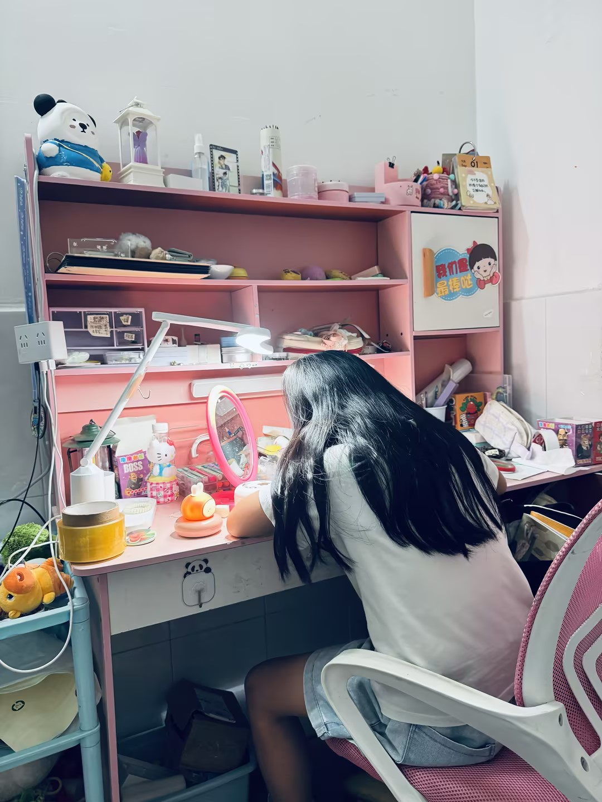

01
机会分析
目标用户、三项核心需求、竞品满足情况、教研与学理结论。
基于5个家庭的用户访谈与真实作业观察，结合竞品分析，明确作业关键过程的产品理念、业务边界与业务框架。
核心需求：进入作业状态 · 卡住时继续自己做 · 写完后自己发现问题
目标用户、三项核心需求、竞品满足情况、教研与学理结论。
产品为什么做、创造什么价值、设计原则、明确边界，以及面向孩子的一句话产品方向。
围绕进入作业状态、卡住后继续自己做、写完后自主发现问题和方法沉淀，组织核心系统与底层能力。
跨5个家庭的共同特征：孩子难以进入作业状态，卡住后难以继续自己做，写完后也难以自己发现问题，家长被迫承担催、讲、查。
“如果‘教育’和‘工具’只能选一个，我们还是聚焦到工具，去解决作业过程中的问题。”
我希望有人帮我确认任务、安排顺序并把第一步变简单，从而不用等家长反复催促，也能开始完成作业。
我希望先获得听得懂的提示和分步引导，从而能自己完成关键步骤，并知道同类题可以怎么做。
我希望工具快速指出需要再看的范围并给出检查方法，从而能自己发现、改正错误，并留下下次可用的方法。
竞品已经提供计划、讲题和批改功能，但主要解决“功能有没有”；孩子能否更容易进入作业状态、卡住后继续自己做、写完后自己发现问题，仍未被完整解决。
卡题是三类需求中功能最集中、竞争最充分的场景。以下基于同一道“银行存款年限题”，对豆包爱学、千问和元宝进行实测比较。
解题执行型｜快速带着孩子完成当前题
先标出本金、年利率和本息和，判断为“储蓄问题”；随后给出“利息＝本金×年利率×时间”“本息和＝本金＋利息”，再设未知数、列方程并算出答案。
条件突出、步骤短、公式与计算同步出现，孩子不需要理解复杂操作，就能迅速跟上当前解题进度。
题型、公式和推导主要由AI直接给出；题后只总结公式，没有形成通用步骤、易错点和迁移验证。
概念理解型｜用多种表达讲清数量关系
先解释本金、本息和、年利率，再用图表示“本息和＝本金＋利息”；之后先求总利息，再用公式求年数，并补充“先算一年利息，再求年数”的第二种方法。
同一关系同时用概念、图示、公式和两种解法表达，适合“看到了数字，但不理解数字关系”的孩子。
主要帮助理解当前题，讲后没有提炼稳定的同类题步骤、易错点，也没有让孩子独立完成一道变式题。
方法迁移型｜讲一道题，沉淀一类题的方法
先提取本金、年利率、本息和；公式抽象时用“利息像租钱的租金”解释，再按“总利息—每年利息—年数”完成计算。
答案之后继续提炼“利息题三步法”，明确不能直接拿本息和去除的易错点，并通过概念记忆卡追问为什么这样算。
方法总结完整，但关键推理仍主要由AI完成；“没问题”只能确认主观感受，不能证明孩子会独立使用三步法。
现有工具能展示计划和时间，却较少同时完成任务确认、顺序安排和第一步拆解。
AI通常完整主讲整道题，孩子以听讲和确认参与，关键推理与作答没有交还给孩子。
系统直接给出结果和错题，较少先提示可疑范围和检查方法，让孩子自己发现并订正。
提醒替孩子安排、讲题替孩子推理、批改替孩子检查，孩子难以积累“我能做到”的体验。
帮助孩子确认今天的任务、安排顺序，把第一项拆成一个马上能完成的动作。
成功标准：不等家长反复催促，孩子开始完成第一项。读取题目和已有作答，先判断卡点，再从小提示开始，按需切换图示、类比和分步引导。
成功标准：关键步骤由孩子完成，并知道同类题可以怎么做。不直接展示全部错题和答案，先指出需要再看的范围和检查方法，引导孩子重新读、重新算和订正。
成功标准：孩子自己发现、改正错误，并留下可复用的方法。孩子在进入作业状态、卡住后继续自己做、写完后自己发现问题三个节点都容易失去掌控感。机会不是替孩子完成，而是在每个节点提供刚刚好的支持，让孩子一次次体验“我能做到”。
作业前确认任务、安排顺序并降低第一步门槛；卡住时先判断障碍，只给当前需要的提示；写完后提示可疑范围和检查方法，让孩子自己发现、订正并留下方法。每一次帮助都以孩子完成关键动作为结果，并逐步减少外部介入。
“给提示。”“第一步要做什么，第二步要做什么。”
提醒没有完整帮助进入状态，AI主讲替代推理，批改直接给出结果，关键动作没有真正交还给孩子。
“如果‘教育’和‘工具’只能选一个，我们还是聚焦到工具，去解决作业过程中的问题。”
新课标要求作业既完成知识巩固，也培养自主学习与时间管理能力。产品不能只提高完成效率，还要保留孩子计划、思考、检查和改正的过程。
资料来源：《0916_小学3-6年级作业概念研究（无图版）》中的政策演变、新课标作业研究和作业管理闭环。
孩子只有反复体验“我能进入状态、我能继续自己做、我能自己发现并改正问题”，才会逐步形成对作业的掌控感。产品要通过适度脚手架恢复胜任感，再逐步退出帮助。
确认任务、安排顺序并拆小第一步，把进入状态变成一次可完成的小成功。
提示只补当前缺口，关键推理和作答仍由孩子完成。
先提示可疑范围和检查方法，把错误变成可理解、可修正的反馈。
资料来源：《0916_小学3-6年级作业概念研究（无图版）》学生作业痛点研究与教研设计理念。文档引用的心理学解释仍需由专业团队继续核验适用范围。
用户研究发现孩子在进入作业状态、卡住后继续自己做、写完后自己发现问题三个节点反复依赖外部介入；竞品功能丰富，却仍替孩子完成关键动作。业务机会是用适度支持帮助孩子获得胜任感，并逐步把作业主动权交还给孩子。
围绕更容易进入作业状态、卡住时继续自己做、写完后自己发现问题提供适度支持，让孩子完成关键动作、获得胜任感，并随着能力增长逐步减少帮助。
作业不仅是需要完成的任务，也是孩子练习进入状态、解决问题和检查改正的真实场景。产品围绕三项核心需求提供适度支持，让孩子一次次体验“我能做到”，再随着能力提升逐步退出。
围绕“让孩子在作业中获得胜任感，逐步实现自主学习”，建立从核心产品、业务单元到核心系统和底层能力的四层框架。
帮助孩子更容易进入作业状态、卡住时继续自己做、写完后自己发现问题，在真实作业中持续积累“我能做到”的体验。
只呈现任务进度、求助情况和独立完成变化，让家长在必要时介入，不继续承担全程催、讲、查。
确认任务、安排顺序、拆小第一步，帮助孩子开始完成第一项。
识别卡点、给出适度提示，由孩子完成关键步骤并继续作答。
提示可疑范围和检查方法，引导孩子自己发现、改正并说明原因。
总结同类题步骤、易错点和已掌握方法，为下次减少帮助。
任务识别与核销、顺序建议、第一步拆解、阶段进度和休息后拉回。
读取题目和已有作答，判断障碍，生成分级提示和多种讲法。
识别漏项和可疑点，提供检查方法，验证自主订正与微型迁移。
记录进入状态、独立作答、主动检查和方法掌握，控制帮助逐步退出。
年级、学科、能力基础、使用偏好和可接受帮助方式。
任务、题目、手写过程、停顿、修改和语音意图识别。
解题校验、卡点分类、脚手架生成、方法提炼与迁移验证。
答案核验、教材适配、内容边界、隐私保护和家长可见反馈。
待验证：首发优先节点、学科与年级范围、不同能力孩子的提示退出规则、准确率门槛、端云分工和版本节奏。